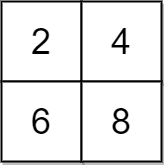
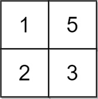
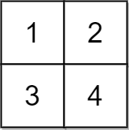

| Category | Difficulty | Likes | Dislikes |
|---|---|---|---|
| Algorithms | Medium | 1101 | 75 |
google | microsoft | epam-systems
You are given a 2D integer grid of size m x n and an integer x. In one operation, you can add x to or subtract x from any element in the grid.
A uni-value grid is a grid where all the elements of it are equal.
Return the minimum number of operations to make the grid uni-value. If it is not possible, return -1.
Example 1:

Input: grid = [[2,4],[6,8]], x = 2
Output: 4
Explanation: We can make every element equal to 4 by doing the following:
- Add x to 2 once.
- Subtract x from 6 once.
- Subtract x from 8 twice.
A total of 4 operations were used.Example 2:

Input: grid = [[1,5],[2,3]], x = 1
Output: 5
Explanation: We can make every element equal to 3.Example 3:

Input: grid = [[1,2],[3,4]], x = 2
Output: -1
Explanation: It is impossible to make every element equal.
Constraints:
m == grid.lengthn == grid[i].length1 <= m, n <= 1051 <= m * n <= 1051 <= x, grid[i][j] <= 104